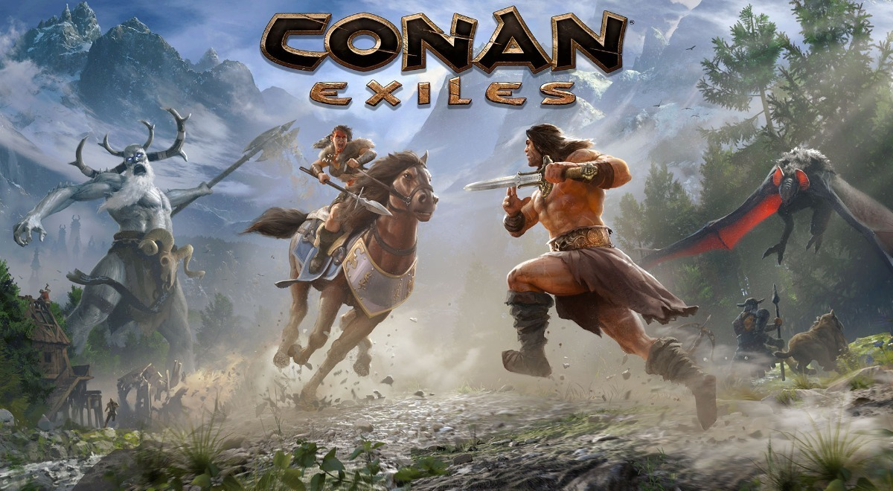
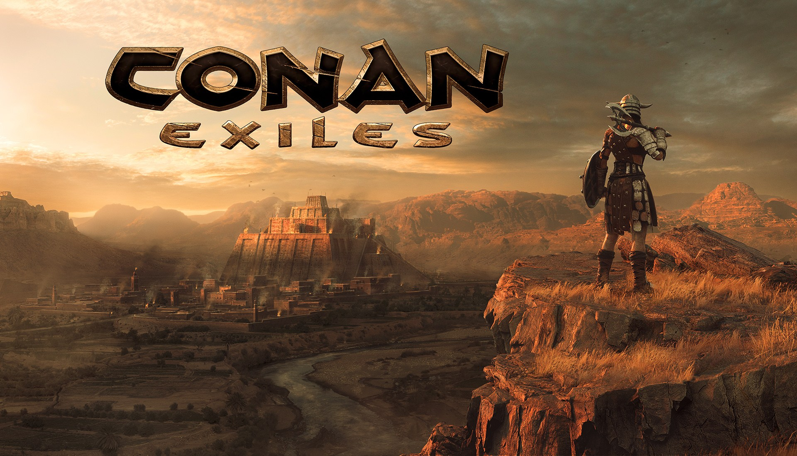

Conan Exiles é um videogame de sobrevivência desenvolvido e publicado pela Funcom para Microsoft Windows , PlayStation 4 e Xbox One . O jogo se passa no mundo de Conan, o Bárbaro , com o personagem jogável personalizado sendo resgatado por Conan, começando sua jornada. As versões de acesso antecipado do jogo foram lançadas no início de 2017, deixando oficialmente o acesso antecipado em 8 de maio de 2018.
A premissa mais básica de Conan Exiles é a sobrevivência na Era Hiboriana pré-histórica de ficção . [2] Os personagens dos jogadores começam a ser condenados por vários crimes, sentenciados à morte e são crucificados sob o sol escaldante do deserto. O jogador é resgatado por Conan , no entanto, e como exilado deve agora navegar por uma paisagem desértica do deserto, apropriadamente intitulada The Exiled Lands . Embora grande, esse foi inicialmente o único biomadisponível para exploração. Uma atualização posterior adicionou um bioma chamado The Frozen North, que adicionou novos elementos para construir, novas armaduras e toda uma nova terra para explorar. Ele também adicionou o Star metal, que é usado para construir armaduras fortes e melhores ferramentas e armas. Um bioma adicional, The Highlands, foi adicionado em 2017. Uma área de alto nível do Vulcão foi seguida no segundo trimestre de 2018 na região mais ao norte do mapa do jogo. Esta mais nova adição também adicionou Obsidian, usada para criar ferramentas e armas poderosas que rivalizavam com suas contrapartes do Star Metal. De acordo com o gerente da comunidade da Funcom , Jens Erik, o jogo final é de cerca de 53 km 2 .
A história das terras exiladas é revelada ao jogador pelo Warmaker Klael, um dos Giantkings, os antigos governantes das terras exiladas. Klael revela que os humanos vieram para os gigantes como refugiados, e os gigantes ofereceram aos humanos as terras congeladas do Norte para se estabelecerem. Os humanos construíram uma cidade entre as árvores e praticaram ciências estranhas e adoraram deuses demoníacos. Houve paz e comércio por mil anos entre os humanos e as gigantes. No entanto, devido à ganância humana, a guerra finalmente eclodiu. Quando a guerra começou, os gigantes criaram a pulseira, adornada por todos os jogadores para dobrar a vontade dos prisioneiros de guerra humanos, permitir que eles entendam a linguagem dos gigantes e impedir que os humanos escapem. Eles passaram a contar com prisioneiros humanos para lutar e trabalhar pelas gigantes. O warmaker agora não tem certeza do novo propósito das pulseiras. Perto do fim da guerra, os humanos revelaram uma nova arma, forjada pela ciência, esmagando tropas e envolvendo os sobreviventes em pedra. Em desespero, os gigantes criaram o ritual que convocou a tempestade de areia, que abrasou e destruiu tudo em seu caminho. É por isso que a maioria das terras exiladas agora é um deserto como lixo. Agora todos os gigantes estão mortos, exceto o Warmaker Klael. Depois de milhares de anos, Conan vem falar com o Warmaker e vai procurar o Anel de Serpente de Set. É por isso que a maioria das terras exiladas agora é um deserto como lixo. Agora todos os gigantes estão mortos, exceto o Warmaker Klael. Depois de milhares de anos, Conan vem falar com o Warmaker e vai procurar o Anel de Serpente de Set. É por isso que a maioria das terras exiladas agora é um deserto como lixo. Agora todos os gigantes estão mortos, exceto o Warmaker Klael. Depois de milhares de anos, Conan vem falar com o Warmaker e vai procurar o Anel de Serpente de Set.

